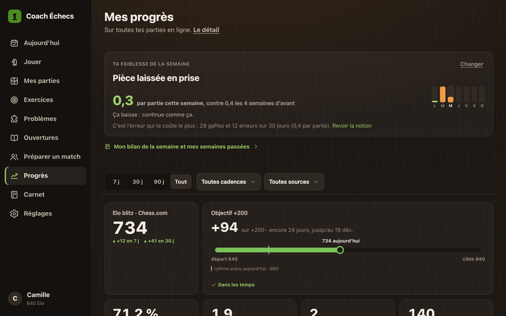
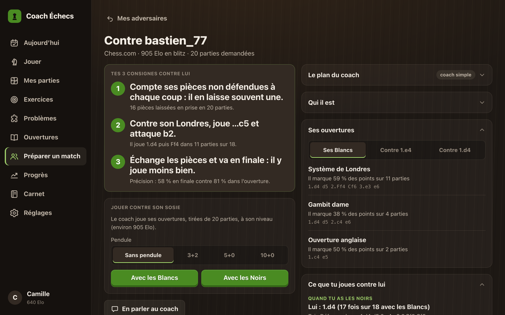

Première version · bientôt à télécharger Gratuit, sur ton ordinateur.
Un coach d’échecs rien que pour toi.
Éperon lit tes parties, met des mots sur ce qui te coûte des points, et t’explique les positions simplement.
De vraies réponses du coach d’Éperon, branché sur Claude. Choisies et relues : chaque coup est vérifié par le moteur.

Tes progrès
Des mots sur ce que tu sentais déjà.
L’écran Progrès te dit vite ce qui te coûte le plus de points : l’erreur qui revient le plus, ou tes défaites au temps quand elles pèsent lourd. Compté sur tes vraies parties, pas sur une moyenne.

Le coach
Comprendre le jeu, pas réciter la théorie.
Devant une position compliquée, le coach te l’explique avec des mots simples : ce qui est déséquilibré, et quel plan suivre. Tu lui poses ta question par écrit ou à voix haute, il répond en quelques secondes. Les lignes de coups restent là pour qui les veut.
Beaucoup d’outils calculent. Éperon explique.
Préparer un match
Prépare-toi contre un joueur.
Donne son pseudo : Éperon regarde ses parties et te montre ses habitudes. Pratique avant un match, ou pour jeter un œil aux parties d’un élève.

Comment ça marche
Les meilleurs programmes qui existent, réunis dans un seul outil.
Tes parties
Tu donnes ton pseudo Chess.com ou Lichess. Éperon va chercher tes parties tout seul.
Le calcul
Stockfish, l’un des moteurs d’échecs les plus forts du monde, analyse chaque coup. Sur ton ordinateur, gratuitement.
Le harnais
Éperon ne fournit pas l’IA : c’est un harnais d’échecs. Il donne à l’IA de ton choix le calcul du moteur et tes parties, et relit chaque réponse avant de te la montrer.
Ton travail
Chaque jour, une séance courte : des exercices tirés de tes propres parties, et des problèmes classiques.
L’histoire · pourquoi j’ai fait Éperon
Je voulais un coach perso, qui me suive de partie en partie.
Je joue beaucoup aux échecs : en ligne, en club, et j’ai pris des cours. Les outils pour apprendre, on s’y perd. Trop compliqués, ou chers pour ce qu’ils donnent.
Je voulais un bureau à moi pour apprendre. Quelque chose de personnalisé, comme un prof particulier, ou comme un soutien à côté d’un vrai prof. Et un outil joli, qui aide vraiment à progresser.
Je travaille tous les jours avec l’IA. Alors j’ai réuni les meilleurs programmes qui existent pour essayer d’en faire une bête de course. Je ne suis pas développeur : les grandes décisions sont les miennes, le code est écrit avec Claude, une IA.
J’ai un niveau amateur aux échecs, et c’est la toute première version : il manque des choses.
Éperon se construit avec les gens, pour les gens. Joueurs, profs : toutes les remarques constructives et tous les coups de main sont bienvenus.
Maxime
On le construit ensemble
Une idée, un défaut, un coup de main ? Viens en parler.
Chez toi, Éperon est gratuit. Plus tard, une version en ligne, sans rien installer, sera payante : c’est elle qui fera vivre le projet.
Le salon de discussion ouvre bientôt. Cette page donnera le lien ce jour-là.
L’installer chez toi
Éperon tourne sur ton ordinateur. Sans clé d’IA, rien ne sort de chez toi.
Où on en est aujourd’hui
Rien n’est encore à télécharger. Une appli à double-cliquer est en préparation. Une installation pour bricoleurs, avec Docker (un outil de développeur), est écrite mais pas encore essayée de bout en bout. Rien n’a encore tourné sur Windows.
Gratuit, et le code sera visible par tous
Le code sera publié : tu pourras le lire et le faire tourner chez toi. La licence n’est pas encore choisie.
Le vrai coach demande ta clé
Sans clé, un coach simple répond, gratuitement. Avec ta propre clé Claude, c’est le vrai coach : tes questions et les positions dont tu parles partent alors chez ce fournisseur, et c’est lui que tu paies. Le branchement d’une autre IA est construit mais pas encore essayé.
Bientôt : ton vrai échiquier
Jouer sur un échiquier connecté, les pièces en main. Le branchement du DGT Pegasus est écrit ; on l’essaie sur un vrai plateau avant de te le promettre.
Sur ton téléphone, à la maison
Prévu avec l’installation pour bricoleurs : sur le même wifi que l’ordinateur, tant qu’il reste allumé. Pas encore essayé.
Le lien ouvre le code et son guide d’installation.
Le téléchargement ouvre bientôt. Cette page donnera le lien ce jour-là, et le salon Discord l’annoncera.